From Austria’s misty Alpine landscapes to Prague’s gothic streets, a trip through two beautiful countries—and a quiet lesson about slowing down, switching off, and being present.
Written by Joud
July 2024, our first stop at our first time Europe round trip was the charming, beautiful capital of Austria, Vienna, or as the Austrians call it, Wien. Vienna was a very alive city, filled with joyful people and tourists. It somehow felt like everyone knew each other, talked with each other casually. I remember having many small talks with people. I love small talks, a lot. Luckily, our hotel was close to the center and the famous St. Stephen's Cathedral, where tourists usually are around and explore. St. Stephen’s Cathedral is Vienna's most Gothic landmark, which began as a Romanesque church consecrated in 1147. It was expanded and largely rebuilt in Gothic style from the 14th century onward, becoming closely tied to the Habsburg dynasty and Vienna’s civic and religious identity.
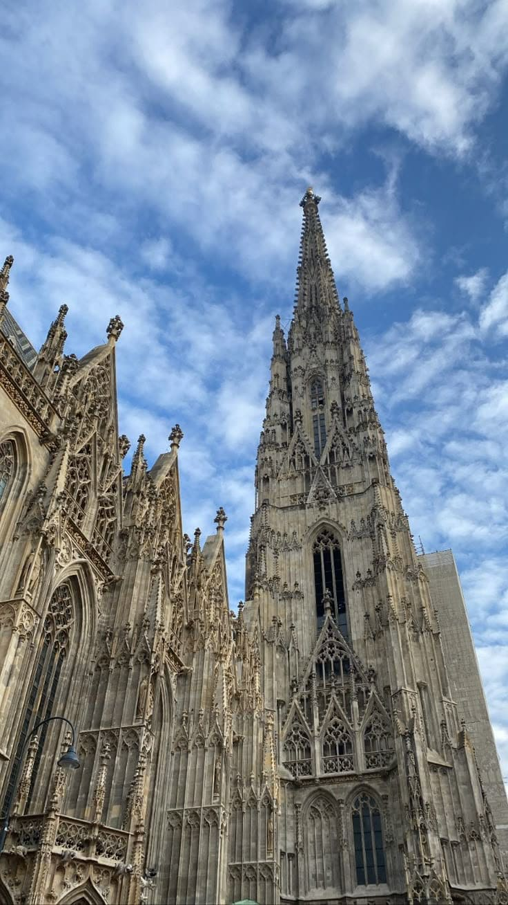
The cathedral was badly damaged by fire near the end of World War II, but Viennese citizens funded its rapid reconstruction. It reopened in 1952. Although at our time of visit it was closed inside, the views from the outside and the Viennese citizens telling the story with passion and loyalty there was a warming experience.
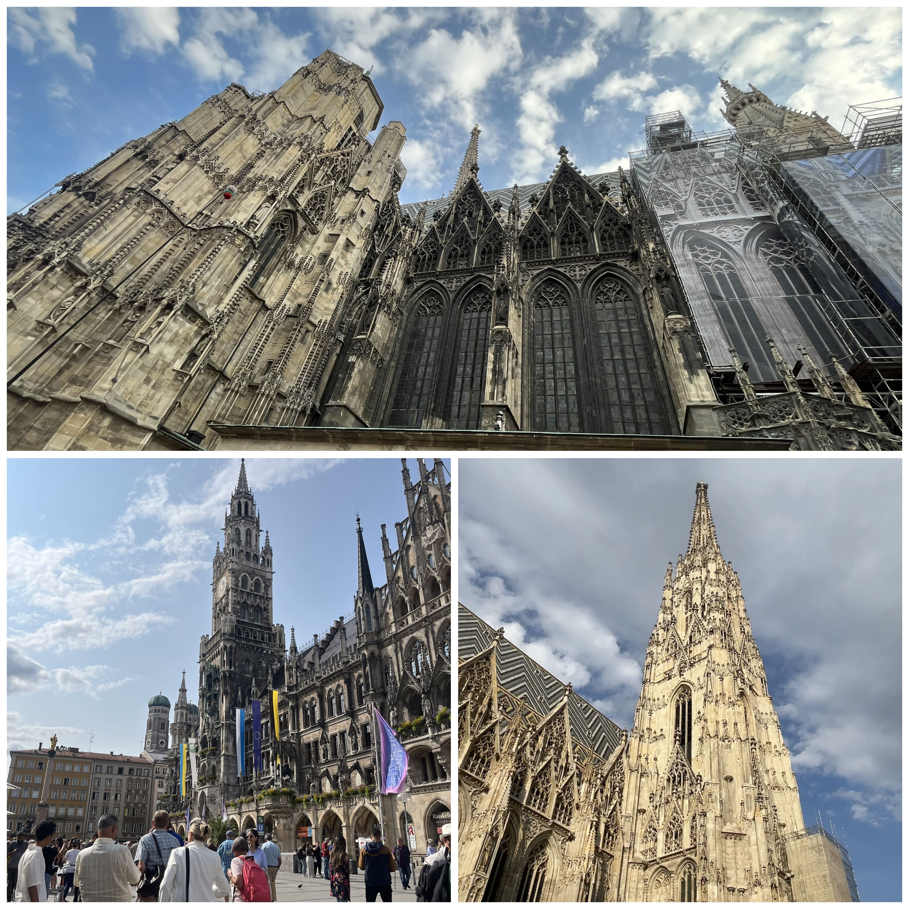
Quick side note: I think it’s important to explore the story behind every landmark and every monument you see. I saw a Reddit post once that sort of changed my perspective and notice on this subject: “When you walk through a museum, you're not just looking at art. You're moving through centuries of people trying to explain love, grief, power, beauty, and belonging.”
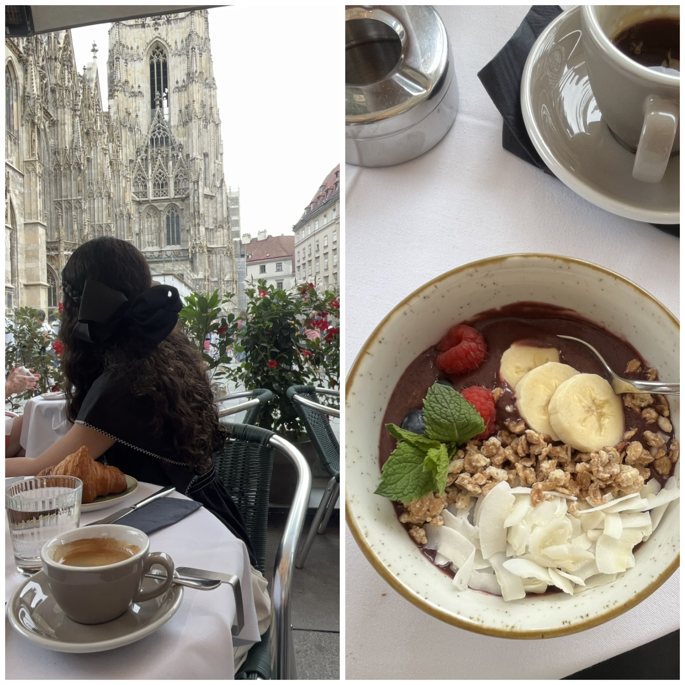
The cafés there beside the landmarks were a such a pretty place to sit, watch the people around talk and the kids play around with a very famous game they sell there, i think they call it a LED slingshot helicopter. My siblings and I tried it and it took us many tries to get one actually flying for 10-15 seconds lol. Suprisngly they had really good acai too (big fan of acai). My lil sister was our pics model back then ᢉ𐭩
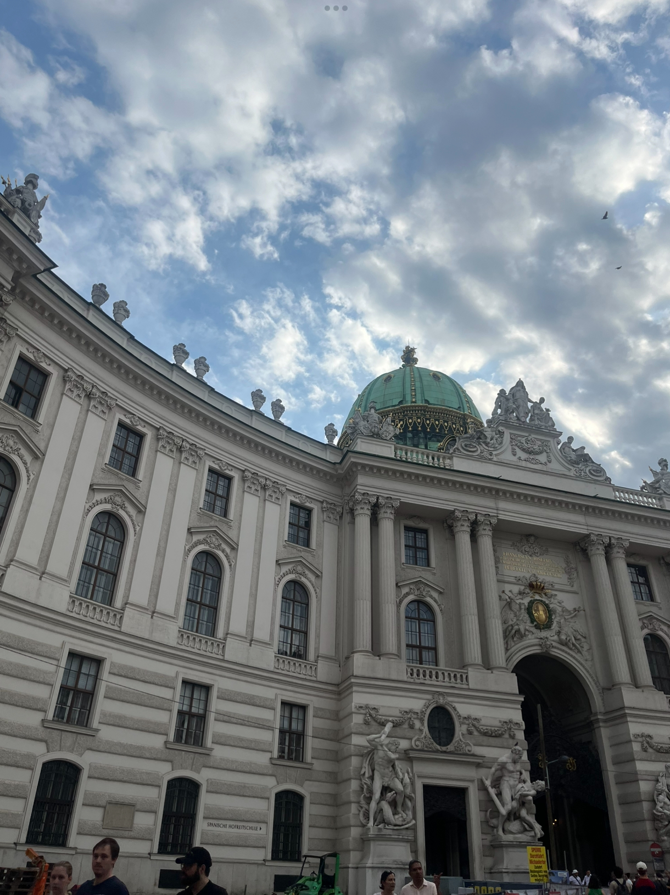
Michaelertrakt, or Michael’s Gate, the main entrance to Vienna’s Hofburg Palace. The Hofburg was once home to the Habsburg royal family, who ruled Austria for centuries. The gate was completed in 1893 and remained the palace’s main entrance until the monarchy ended in 1918. The statues around it represent strength and other qualities expected of a ruler. Its large green dome is one of the Hofburg’s most recognizable features. Beside it is also the famous Spanish Riding School, known for its beautiful white Lipizzaner horses (we unfortunately were not able to see them)
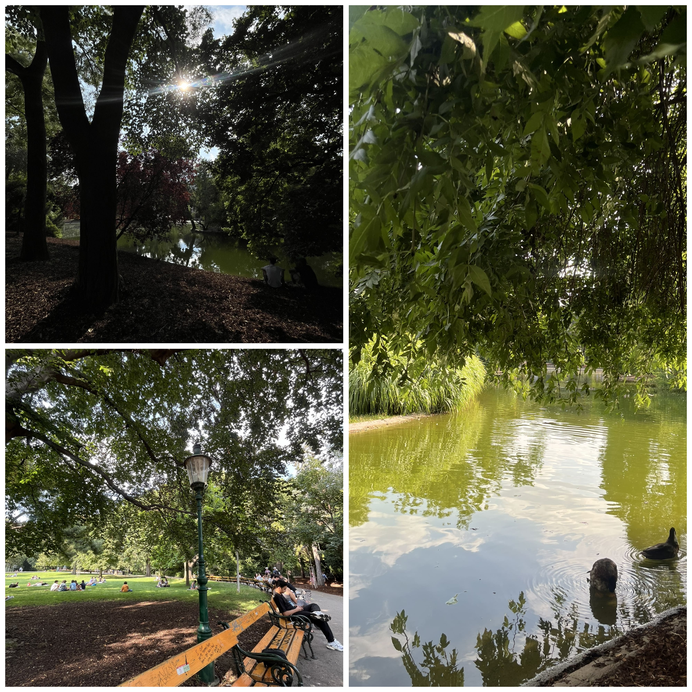
The nature and the views, you got to admit if you live in the Gulf, you really got to spend some time in parks and near trees when you're in a Europian city, even if your not into like villages and stuff, and more into cities and lights, ya I basically just descibed myself there.
Anyways this was Stadtpark, one of Vienna’s most famous parks there, and the first public municipal park there. It was so charming that on our last day we took the longer path to reach a caffee just to go by this park and enjoy the views.
It also had a known staue of Johann Strauss, which was an Austrian composer of dance music, wrote over 500 pieces of dance music.
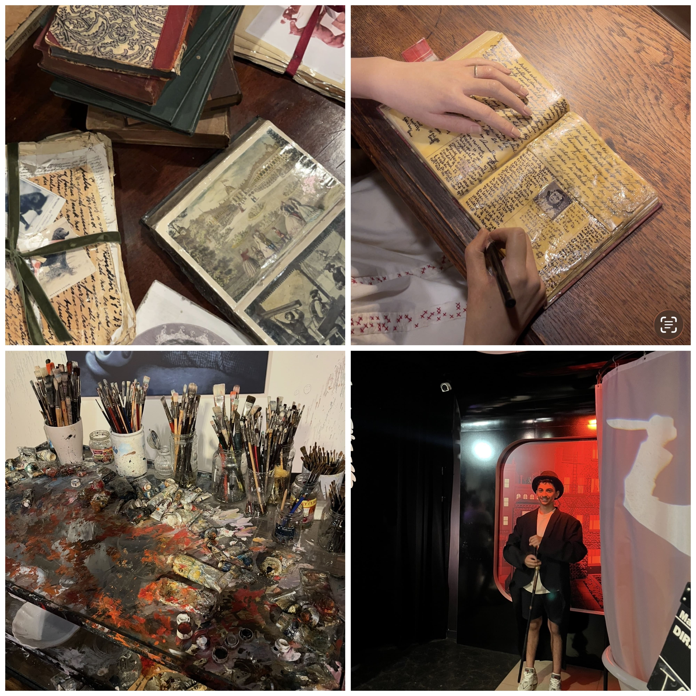
This was the well known wax museum, Madame Tussauds. We went to the one in London before, but what's special about it is that there are different characters in evey city. We saw the figure of Ann Frank and read more through her story, film actresses like Marilyn Monroe, musicians like Elvis Presley, and other historin austrian books and writings.
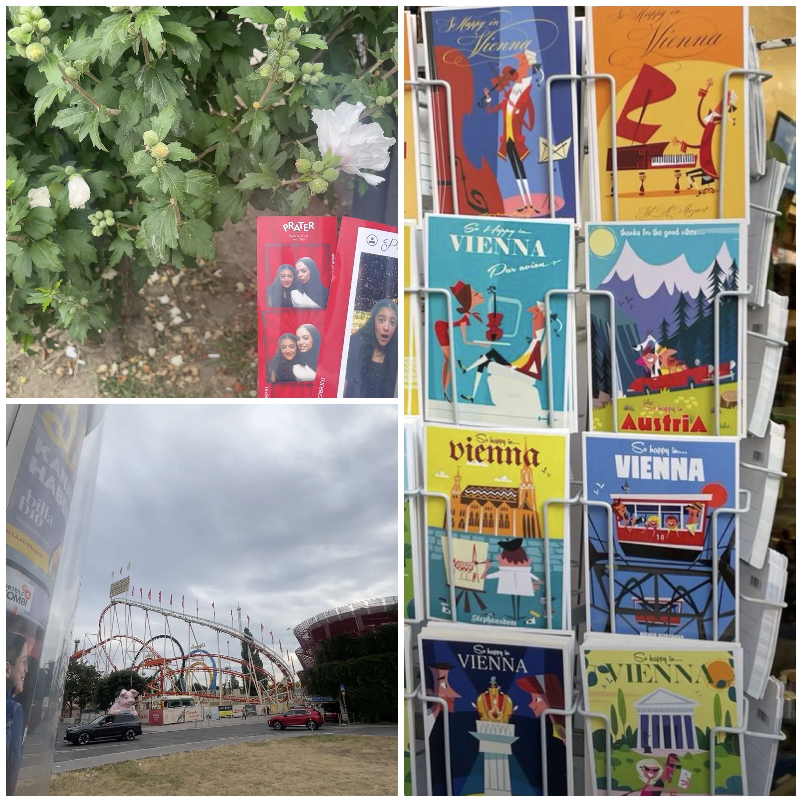
Vienna was fun, a mix of city lights and nature, not very loud and not very calm, somehwere in the middle. In every spot you can make a memory, explore a story behind something, meet new people.
There is a truly underrated amusement park there called the Prater, very big that 2 days were not enough to cover everything there. Literally all kind of rides, shows, arcade games, very very advised to visit there.
Our next distination was Zell Am See, which actually means "Zell on the lake" or "Zell by the lake" to the germans. You know that place or location you see on instragram reels and you go "nah thats not a real place", well that was our ongoing reaction and thought on this unreal place. Nature, trees, hills and mountains, lakes, animals all around, truly a different enviroment.
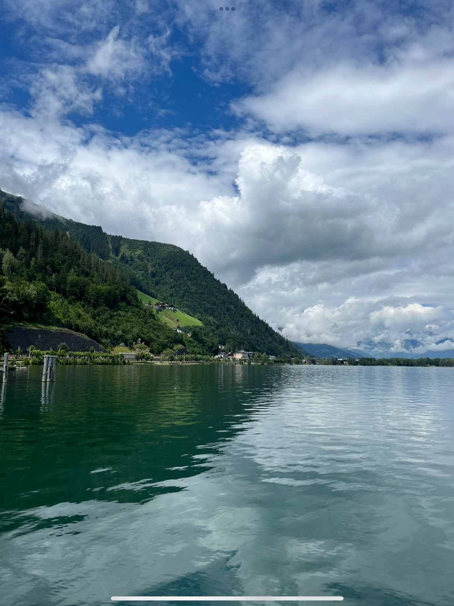
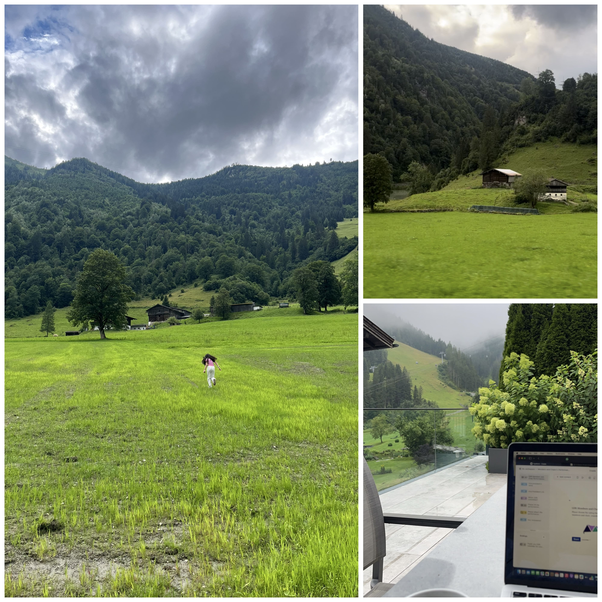
Most of our time spent here was to recharge and enjoy a place and ecosystem we rarly get to experience, I mean cities and stuff we could at some point in Saudi, but greens and nature and hills, ya it's a one time thing. It was a warm feeling to run around and feel the fresh air, see my siblings jump around and play hide and seek, except there is no hide, we call it "صيدة" in arabic. Of course a laptop had to be there, if you read my GSR blog you'd know why
We went to this place called Sigmund Thun Klamm, it's a super narrow Alpine gorge carved through the rock by the Kapruner Ache river. We got to literally walk inside and alongside the gorge on wooden platforms, bridges and staircases attached to rock walls, ya my mom was sort of freaking out there. The waterfalls were extremely close to us, and because of the spray and shade, the way felt very green and mossy, very chill and charmy atomsphere.
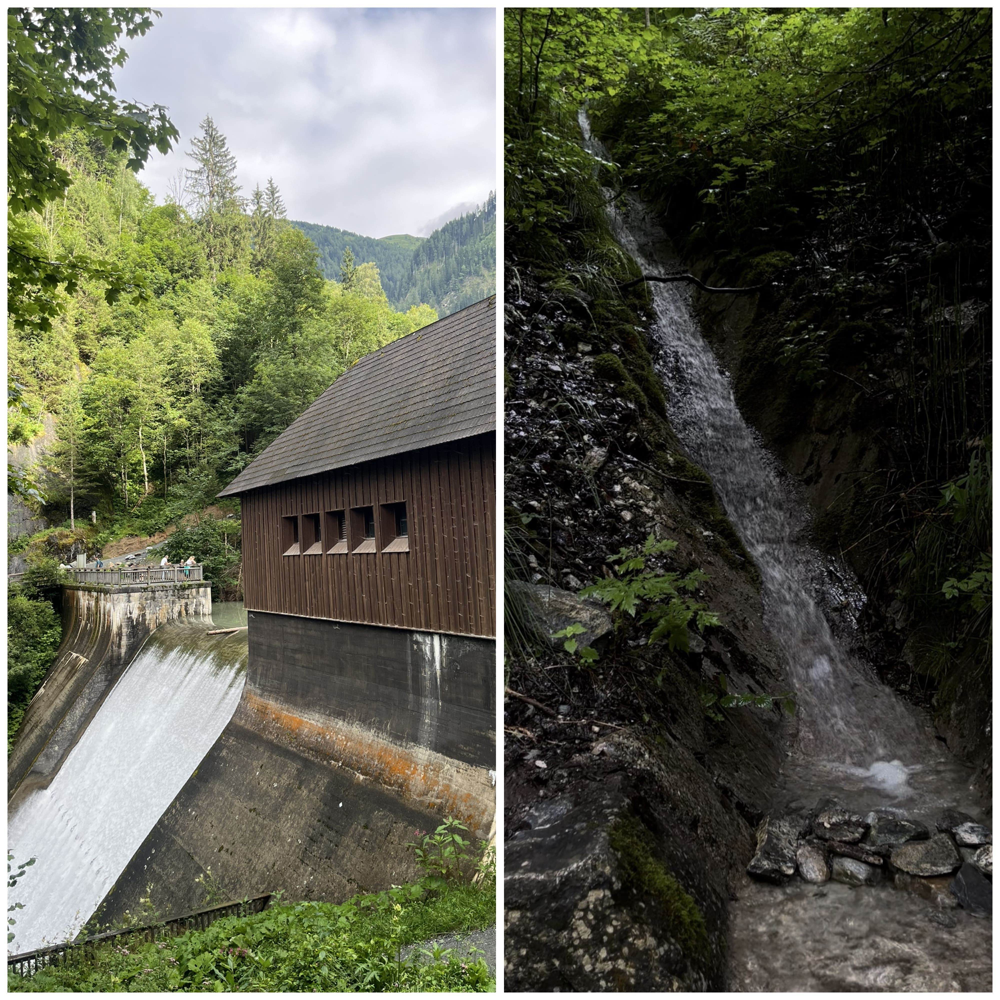
Zell am See's center had these shops and small caffees filled with people, and that center is known for selling these really good chocolate covered strawberries, we were having them eveyday throughout our stay lol. They had good coffee too, points to that. There were many swan lakes, and they would at night for some reason gather around togather for like minutes, which makes the scene cinematical and photogenic 🦢
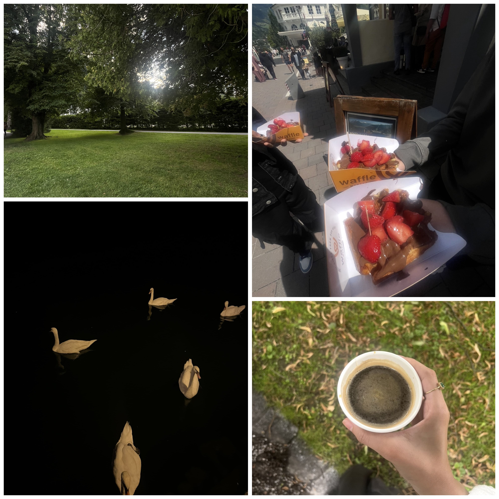
At that time I was still learning flutter, and along the travel I unfortunately felt bad for procrastinating on the flutter course I was taking. I think it was a Tuesday, I took my laptop in the afternoon and went to this huge park near our hotel, watched a couple of vidoes from the course and tried coding on grass. Good vibes, good whether, but insects were the bug in my code (please get it).
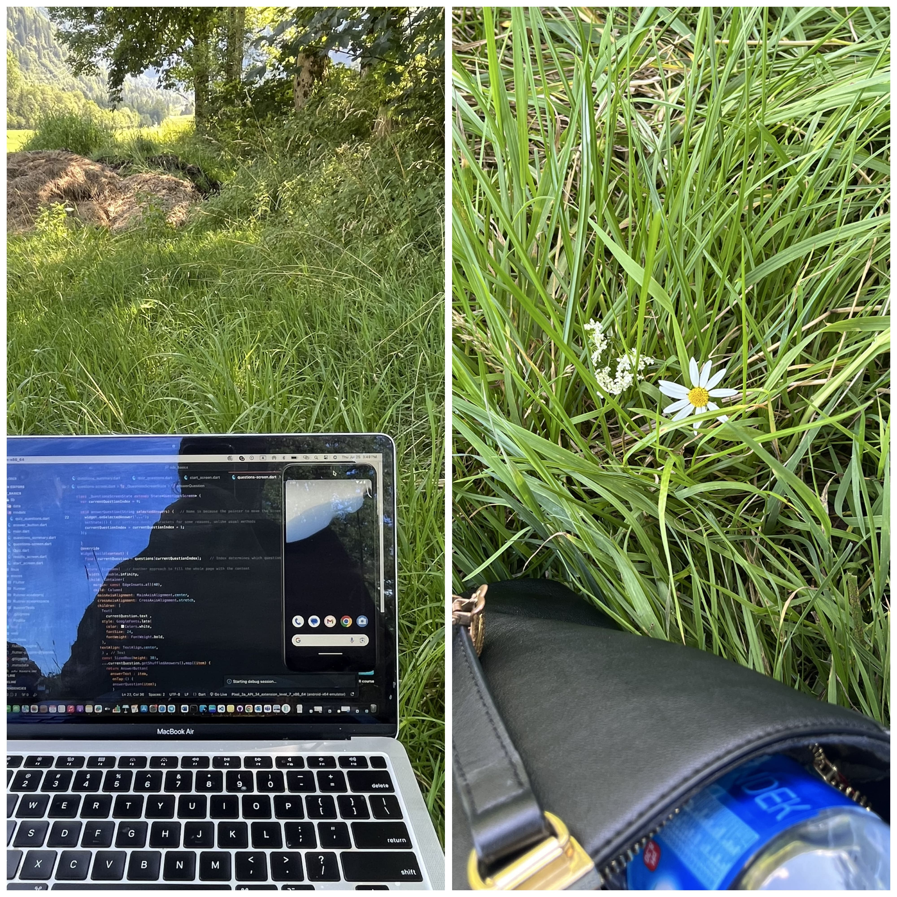
Prague, in Czech Republic, was our last destination, and one of the prettiest cities in Europe. The whole city vibe felt like dark academia, every corner felt like a painting, with a histroical story, and it felt like wandering around a fairytale, especially at night with the fog and lights.
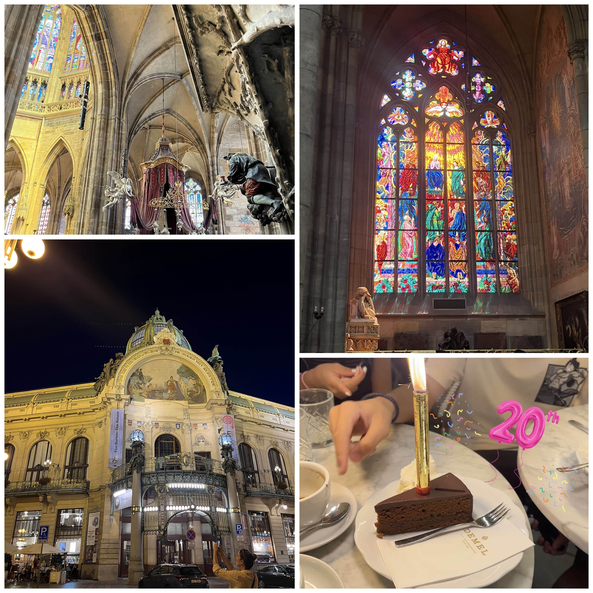
We stayed there for three days, we visited St. Vitus Cathedral inside Prague Castle, Prague’s most famous church because it’s deeply tied to Czech history. Czech kings were crowned there, important rulers and saints are buried there, and it contains the St. Wenceslas Chapel, dedicated to the patron saint of Bohemia, and was constrcuted in 1344. Architecture was, something, the long glasstained-windows, the towers were remarkable.
Luckily, our hotel was near Prague’s municipal house, one of Prague’s great Art Nouveau buildings. It's remarkable in Czech because the Czechoslovak independence was proclaimes here in 1918.
oh and I celebrated my 20th birthday here in Prague, felt surreal, especially stepping onto a new decade of my life.
One of the city's loud and live locations if the Charles Bridge, people call it the iconic bridge of Prague. It's packed with artists, little vendor stands and small shops that sell unique hand-made accessories and crafts, filled with musicians too that make the place even feel more alived. Ya it wasn't easy to get my sister and I out of this place.
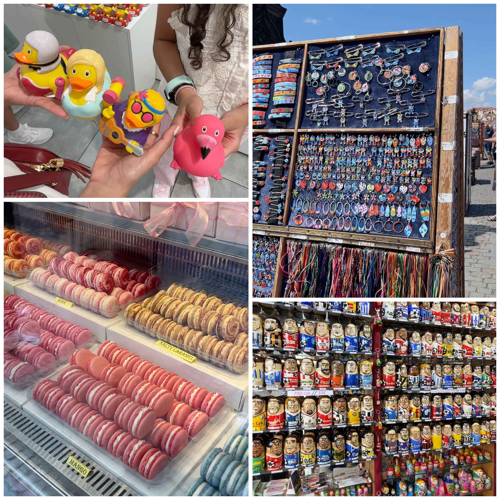
It was like having a bunch of sidequests or missions to accomplish by visitng all these mini shops, like a map in a game you're exploring. You see the pic with some kind of drawing in it, ya some random Czech lady was staring at me and sketching while I was having coffee, she finished it and threw it at the table, just like that.
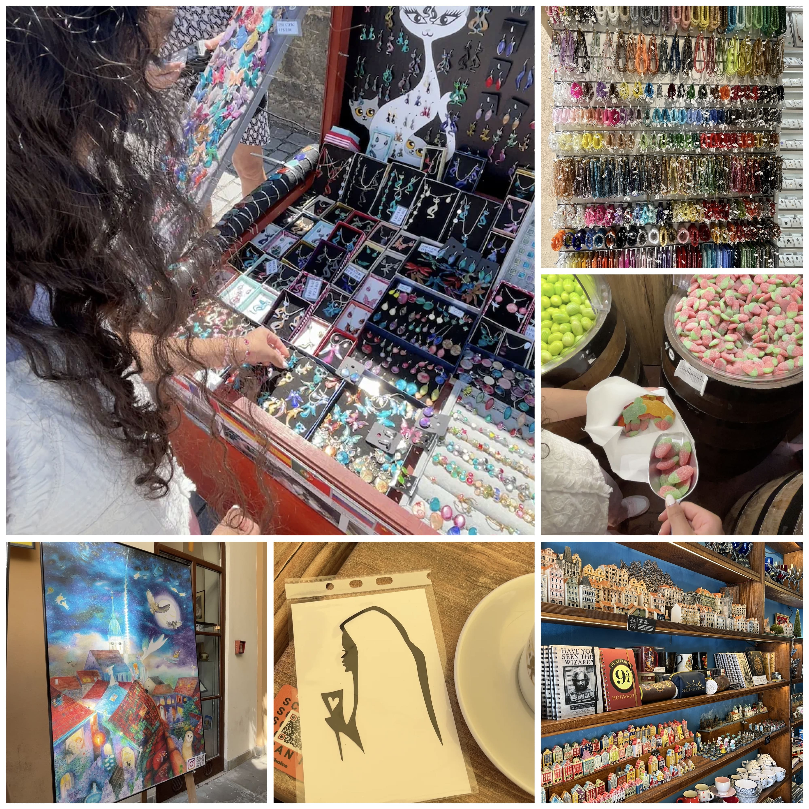
This trip was the first time my whole family and I traveled to Europe together. If you’ve read my previous blogs, you’d know that I was carrying a lot on my mind while traveling, from working across multiple initiatives to keeping up with my mobile app development course. Looking back, I can’t say that I truly allowed myself to fully enjoy and experience the trip, and that taught me such a vital lesson: take a break. Especially when your family has arranged an entire trip for you, you need to switch off for a while and actually be present, both physically and most importantly, mentally. These travels aren’t always there. Most of our time is spent working, studying, chasing deadlines, and thinking about what comes next. There will always be another task waiting for you when you get back, but there won’t always be another evening walking through Prague with your family. I still loved the trip and have so many memories from it, but if I could go back, I would leave more of my responsibilities at home and give myself permission to simply enjoy where I was. Sometimes taking a break isn’t time wasted, it’s part of living, and perhaps something we need to get better at doing without feeling guilty about it.